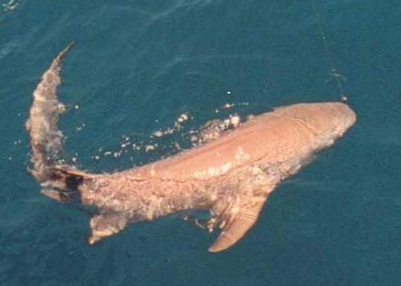

Young lemon sharks have predators that consist of larger sharks. On the other hand, adult lemon shark have barely any predators possibly none. The reason that adults have way less predators than baby lemon sharks is because of adults large size(10feet) and babies size(60-65cm at birth).
Are lemon sharks prey animals or predators? If you guessed predators.. you would be right! Lemon sharks are a large predatory species which is pretty obvious because they are quite big.
credits to anonymous from WikiPedia Commons